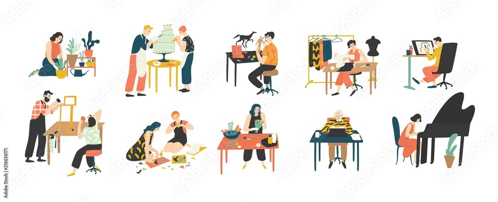
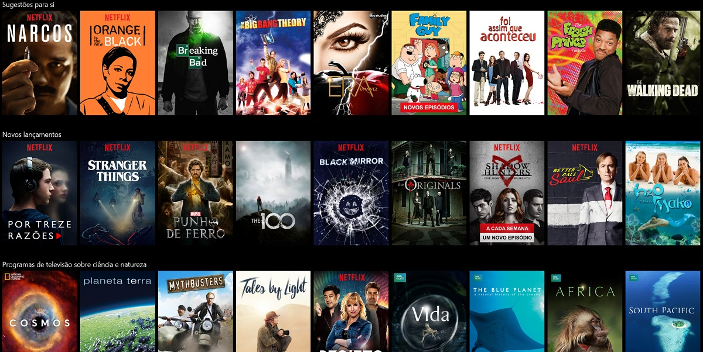

Dicas de Hobbies Incriveis para Você
Os hobbies são otimas distrações para nossa mente. Existem vários tipos, entre eles: ponto cruz, aeromodelismo, leitura, colecionar selos e moedas, praticar esportes, desenho, modelagem, culinária, cantar, dançar, fotografia, etc.
Um hobby não é uma ocupação a tempo inteiro, e tem como objetivo o relaxamento do praticante. Normalmente, a prática de um hobby não implica vantagem financeira para a pessoa em questão. Apesar disso, ele pode se transformar em uma tarefa que resulta em benefício financeiro para o praticante. Por exemplo, uma pessoa que tem a pintura como um passatempo, pode vender um dos seus quadros.
Logo abaixo eu descrevo um pouco sobre os meus hobbies preferidos.
Livros
Livros são uma otima forma de passar o tempo e exercitar a mente.
Criar o hábito de ler pode ser um desaio, muitas pessoas não conseguem se concentrar em alguma leitura. Mas par criarmos esse hábito é necessario começar por assuntos que prendem a nossa atenção.
Algumas dicas que podem ajudar:
O momento da leitura tem que ser prazeroso. Encontre o seu ritmo e aproveite o momento. Começou e não está conseguindo se concentrar? Tente de novo amanhã. Você não está gostando daquele livro que todo mundo te indicou? Por que não parar e retomar essa leitura em um outro momento da vida?

Aqui vai alguns livros que eu gosto bastante, quem sabe não interesse você também!
Musicas
Ouvir música pode trazer muitos benefícios para a saúde, corpo e mente. Quem canta, seus males espanta!
E esses são só alguns exemplos do que a musica é capaz de fazer. Existem varios estudo sobre desenvolimento do cerebro com a musica.
Música faz bem ao corpo e à alma. Durante a gravidez, os benefícios vão além. "As músicas escutadas pela mãe e o bebê, durante a gravidez, podem se tornar uma ferramenta importante, após o nascimento. Ao reconhecer o som que ouvia enquanto estava no útero, a criança fica mais calma. As cólicas diminuem, ela para de chorar e dorme melhor" de acordo com alguns estudos. E ainda ajuda no desenvolvimento neural, contribuindo na atividade cerebral do bebe.
Música Lo-fi
Lo-fi é o diminutivo de Low Fidelity (baixa qualidade, em inglês). O termo é associado a registros sonoros com imperfeições que seriam consideradas erros no processo de gravação em fitas de rolo, como eram gravados os discos antigamente.
Considerada relaxante, e com a proposta de aumentar o foco, a música Lo-fi passou a ser bastante consumida por jovens entre 15 e 25 anos. Gerando um efeito calmante, as composições que seguem o estilo Lo-fi usam batidas e samples em um loop infinito. Especialistas em música e terapeutas explicam que a repetição torna a faixa previsível e, por consequência, acalma os ouvintes.
A musica e o sono tambem tem historia, se você tem insonia, alguns sons relaxantes pode te ajudar a dormir. Um estudo demonstra que o ruído branco é eficaz para mascarar sons do ambiente e que melhorou a qualidade do sono. Então, se sons externos estão mantendo você acordado, a estática fixa do ruído branco pode ser o som ideal para um bom sono. Muitas mães usam o ruido branco para ajudar seus bebes adormecerem, pois se parece com o ruido que tem no utero, sendo familiar e acalmando o bebe.
Já foi comprovado que a música clássica promove um sono melhor em indivíduos com dificuldade para dormir e reduz sintomas da depressão, que também podem interferir na qualidade do sono.
Mas não é só a música clássica que pode causar efeitos positivos para você. O segredo é escolher músicas que você gosta e considera relaxantes como trilha sonora no reino dos sonhos.
Series
Assistir séries é bom para o cérebro, claro com moderação. Tudo que é demais traz prejuizo. Na dose certa é uma otima distração e um otimo estimulo neural.
Ver séries também ativa a serotonina, conhecida como “hormônio da felicidade”, já que ele contribui para o bom humor e alegria momentânea.
Essa diversão reduz seu nível de cortisol, o hormônio relacionado ao estresse. Ter o cortisol controlado protege de risco cardiovascular e doenças como o Alzheimer. Além disso, diminui também seu risco de ganho de peso e as consequências que esse excesso pode trazer para sua saúde.
No link abaixo tem algumas dicas com as melhores avalição.
E essas são algumas que gosto bastante e sempre recomendo, de estilos variados.